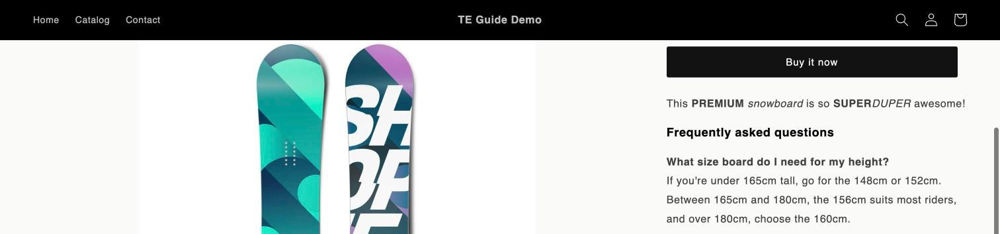

Why bother this week
More shoppers now ask ChatGPT, Google AI Mode, Gemini and Perplexity for deals and gift ideas. Those shoppers show up ready to buy.
AI tools answer from what's on your page, so pages that answer "will it arrive before Christmas?" or "what size do I need?" give them something to use. The health check is the quick win this week. The FAQs keep building into Christmas and beyond.
What the skill does
Five-minute health check
Is your store open to the public? Are your policies filled in? Are Shopify's AI channels on? Is anything blocking AI crawlers? Plus a quick Google Merchant Center checklist.
Find the real questions
For your top products, Claude gathers the questions shoppers actually ask: from your customers, Reddit, Quora and reviews. Every question shows where it came from. Nothing made up.
Write the answers
Short, clear FAQ answers using only facts from your page or from you. You read and fix them, then paste them in or have Claude add them for you, one product at a time.
What you need
- A paid Claude plan (Pro or higher) at claude.ai.
- Admin access to your Shopify store with permission to edit products.
- Your 3 to 5 best sellers in mind, and the questions customers email you about most.
Set it up (about 10 minutes, once)
Download the skill
This zip file is the skill. In the next step you'll upload it to Claude just as it is, so leave it zipped.
If your Mac unzipped it for you (you'll see a folder instead of a .zip), right-click the folder and choose Compress to turn it back into a zip.
Add it to Claude
- In Claude, open Settings > Capabilities and make sure Code execution and file creation is on. Skills need it.
- Open the skills area. It's under Customize > Skills or Plugins in the left sidebar, depending on your plan.
- Click Add (or +), then Upload, and choose the zip you downloaded.
- Click Upload. You'll see "Black friday ai check" in your list.
You only do this once. The skill and the Shopify connection follow your Claude account, so they work in Claude on the web, the desktop app and Cowork.
Connect your Shopify store
- Go to Shopify in Claude's directory and click Connect. It's Shopify's official connector, so there are no codes or developer settings.
- The first time Claude uses it, you'll see Authorization required in the chat. Click Reconnect, choose your store, then click Install in Shopify.
About the permissions: Shopify asks to "view and edit store data". That's how the connector works for everyone. The skill only ever adds FAQs to product descriptions, and only after you say yes (see the rules below). You can remove it any time in Shopify under Settings > Apps.
Rather not connect it? Skip this step. Everything works except "add it for me", and you paste the answers in yourself.
Back up your products
In Shopify, go to Products > Export, choose all products, CSV, and export. Thirty seconds, and you've got a copy of every description just in case.
Start the check
Open a new chat in Claude (or a new task in Cowork), make sure web search is on, and type:
Run my Black Friday AI check. My store is yourstore.com
Then just chat. Claude explains each part, asks what it needs, and waits for you.
Putting the answers on your store
Once you've read and approved the answers for a product, Claude asks how you want to add them. Pick either, every time:
I'll paste them in myself
Claude gives you a ready block. In Shopify, open the product, click the </> button in the description toolbar, paste the block at the very end, click </> again and Save.
Add it for me
Just say "B" or "add it for me". Claude shows you exactly how the description will look, keeps a copy of your original, waits for your yes, then adds the FAQ to the bottom of that one product.
It checks the change worked and asks you to look at the live page. Changed your mind? Say "undo it" and your original goes back.

The rules (please read)
- You're in charge, and it's your store. Claude suggests and you decide. Read every answer before it goes on.
- The only thing Claude changes is adding an FAQ to the bottom of a product description. Never prices, stock, discounts, titles, images, product status, collections, your theme or settings.
- No made-up facts. If Claude isn't sure about a delivery date, return terms or sizing, it writes
[CONFIRM]and asks you. Fill every one in. - One product at a time. Check each page looks right before moving on. If your theme shows it oddly, undo it and paste instead.
- Get your FAQs live by Mon 23 Nov. That gives AI tools a few days to pick them up before Black Friday. Then leave your product pages alone for the big week, so nothing breaks while the sales roll in.
After Black Friday
Keep the questions Claude found. They're perfect topics for two or three Christmas gift guides. When you're ready, ask Claude: "Plan me two or three gift guides for Christmas using the questions we found."
Download the skill, connect Shopify, and run the check on your top 3 to 5 products today. It keeps working long after the sale.
Stuck, or want a second pair of eyes? Bring it to the AI Search & SEO gym in The E-Commerce Accelerator on Tuesdays.